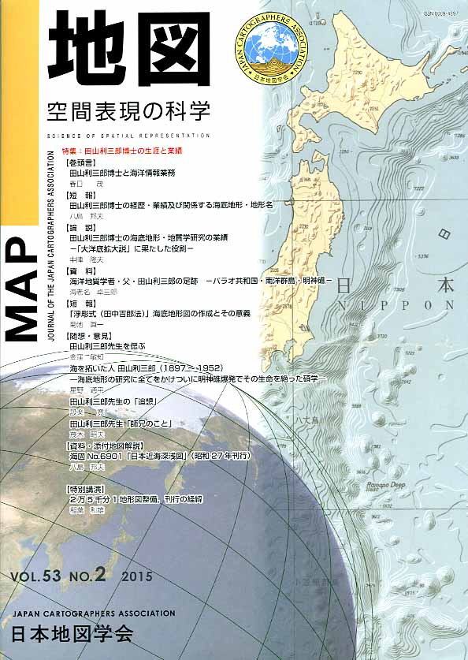

| ご 案 内 | 入会手続き | 会 則 | メーリングリスト | |
| 特別講演リスト | 役員名簿 | 学 会 賞 | 地図展優秀地図 | National Report |
日本地図学会 入会手続き
| 本学会は、現在約1,000名の会員を擁して活動しておりますが、地図に関心や興味をもつ方々にとって絶好の研究・情報収集の場であると確信しております。本学会の趣旨・活動内容等についてご検討のうえ、会員としての特典をフルに活用し効率的な研鑽を積まれますようここに入会をお勧めする次第です。 | ||
| 会員の特典 |  | |
| 本学会の会員には、次の特典があります。 | ||
| 1. |
機関誌『地図』および添付地図の無償配布を受け、またこれに投稿することができます。 |
|
| 2. | 本学会の刊行物は、割引価格で購入することができます。 | |
| 3. | 本学会で主催または共催する研究会、専門部会等に参加し、研究発表や討論を行うことができます。 | |
| 4. | 本学会の所蔵するICA等の地図・図書類を随時利用することができます。 | |
| 5. | 国際会議等に出席し、研究発表、国際交流・情報収集の機会を得ることができます。 | |
| 会費・入会の手続き | |
| 本学会の会員には、普通会員・学生会員（個人）、特別会員（法人・団体または個人）、購読会員（機関誌の購読を目的とする団体-図書館など-）とがあり、会費（平成26年度より）はそれぞれ次のとおりです。 | |
| 普通会員 年額 8,０００円 | |
| 学生会員 年額 2,０００円 | |
| 特別会員 年額 １口 8０,０００円（１口以上随意） | |
| 購読会員 年額 機関誌１部につき 8,０００円 | |
| 入会の申込は随時受け付けております。入会ご希望の方は、以下の手順でお申し込み下さい。また、不明な点などございましたら、お気軽に事務局までお問い合わせください。 | |
| １． |
以下の「日本地図学会 入会申込書」を印刷していただき、必要事項をご記入のうえ、学会事務局宛に郵送もしくはＦＡＸでお送りください。「入会申込書」と同内容を、メールでお送りいただいても結構です。会員種別により、申込用紙が異なりますのでご注意ください。 ・「普通会員・学生会員」は こちら から（PDF：172KB） ・「特別会員・購読会員」は こちら から（PDF：163KB） |
| ２． | 「入会申込書」の送付と同時に、会費を下記口座へ送金してください（恐れ入りますが、送金手数料は送金者負担とさせていただきます）。専用の払込書も用意しています。ご希望の方は、入会申込書送付の際、お知らせ下さい。 |
| ３． | なお、正式の入会には常任委員会の承認を要します。 |
|
会費自動振替制度 ：次年度以降の会費を郵便貯金から自動的に振り込む制度があります。手間がかからず送金手数料も割安です。ご希望の方は用紙をご請求ください。 |
|
| 会員情報の変更 | |
| 入会の際に届け出た会員情報〜氏名、住所（機関誌送付先）、所属など〜に変更が生じた方は、至急事務局へ届け出てください。機関誌の送本や重要な情報の伝達に支障が生じる可能性があります。ご協力の程お願いいたします。 | |
| 会員情報の届け出方法（どちらかでお願いいたします） | |
| １．変更事項をメールかＦＡＸで、学会事務局までお送りいただく。 | |
| ２．専用の届け出用紙（PDF：107KB）を利用し、ＦＡＸまたは郵便にて学会事務局までお送りいただく。 | |
| 申込み・問い合わせ | |
| 日本地図学会 事務局 | |
| 〒153-8522 東京都目黒区青葉台４−９−６ (一財)日本地図センター内 | |
| 電話 （０３）３４８５−５４１０ | |
| ＦＡＸ （０３）３４８５−５５９３ | |
| 銀行口座 みずほ銀行渋谷支店 普通預金 ０２０７７９７ | |
| 振替口座 ００１７０−２−４６４０９ | |
| ご 案 内 | 入会手続き | 会 則 | メーリングリスト | |
| 特別講演リスト | 役員名簿 | 学 会 賞 | 地図展優秀地図 | National Report |